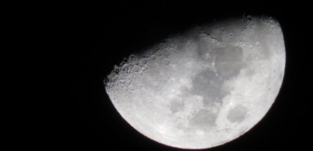
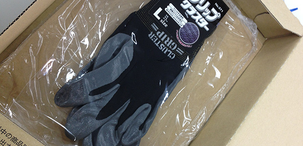

いつもよりチョット積極的
少し前のことですが、天体観測をしてきました。
先週のブログで話題にしたチラシが無事に入稿となりまして、とりあえずの打ち上げとして食事やらカラオケやらにいつもは行くのですが、今回は珍しく星空観察です。
塾の本部スタッフの女性が趣味で天体望遠鏡を持っていて、いまはオリオン座の少し離れた場所に木星が見えるとのことでした。
ということで、広報の女性も含め３人でいわゆる‘土手’のある川沿いまで行ってきたわけです。
実は私、理科を教える身でありながら、あまり天体観測はやったことがありません。
宇宙は好きですし、もっとも心躍る分野の一つとして認識しています。
ところが、元来の出不精と、「どうせプロの人が撮影した写真以上のものは見られないんでしょ」という理屈で今まで数えるぐらいしか天体望遠鏡のファインダーをのぞくことはありませんでした。
しかし、年齢のせいなのか、ちょっとそういうこともしてみたい気持ちになりまして。
そういうわけで、割と積極的に参加したのでした。
寒さに勝つためには…
ところがどっこい、土手サムイ！
最初に月を見ていたときまでは元気だったのですが、情けないことに、そこから怒涛の寒気に気圧されまして。
しかし木星の縞模様を見るまでは…という思いでいましたが、そんなときに限ってうまくファインダー越しの視野の中に木星が入ってこない。
あまりの寒さに耐えきれなくなった私は、女性陣に望遠鏡の角度調節を任せ、体温を上昇させるべくエグ○イルばりのダンスアクションで動き回りました。
ただ踊りまくるだけではもったいないので、女性陣に声援を送りながらやっていたのですが、相当ウザかったようでヤメてくれと言われてしまいました（苦笑）。

その影響もあってか女性陣も寒さにノックアウトされ、次回リベンジを誓ってこの日は退散しました。
ちょっと冬の真夜中を甘くみていまして、反省。次回は手のかじかみ対策も万全にしようと広報の女性が手袋を買ってくれたので、次は縞模様をこの目に焼き付けたいと思います。